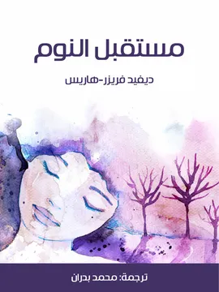

مستقبل النوم

قراءة عربية أصلية محددة النطاق في الصفحات 9 إلى 14 من ملف PDF المرتبط، وليست تلخيصا كاملا للكتاب. نناقش ما تدعمه هذه المقاطع فقط.
أكثر ما نألفه وأقل ما نفهمه: النوم والأرق
يفتتح ديفيد فريزر-هاريس الفصل الأول «النوم والأرق» بقوله: لعل أكثر الأشياء اتصالًا بحواس الإنسان أكثرها غموضًا عليه، ولعل النوم هو أكثر ما نألفه من هذه الأشياء جميعًا، ومع ذلك فقل أن يوجد من الناس من يستطيع أن يشرح في دقة سبب ميلنا إلى الإغفاء واستسلامنا في آخر الأمر إلى النوم. ويفهم من لفظ النوم دائمًا «حالة اللاوعي الطبيعية» التي يصل إليها الشخص السليم. وعلى أثر كشف حالات النوم الاصطناعي الغريبة وفي إبان الفوضى التي أشاعتها شعوذة مسمر، ظهرت الحاجة إلى اسم لهذا اللون من النوم: ولد الدكتور فريدريخ أنطون مسمر سنة ١٧٣٣م في مدينة «فايل» بسويسرا وتوفي ١٨١٥م؛ طبيب نمساوي درس الطب في فينا، وأولع منذ صباه بعلم الفلك، واعتقد أن للنجوم تأثيرًا في الكائنات الحية بواسطة الكهربائية ثم عزاه إلى قوة المغنطيسية، وكان يرى أن المرضى يمكن إبراؤهم بلمس مكان الداء بالمغنطيس. على أنه التقى سنة ١٧٧٦م بالراهب جاسنر ولاحظ عليه أنه يشفي المرضى بسلسلة حركات جثمانية، فتوهم أن في جسمه قوة خفية كامنة، وسنة ١٧٧٨م انتقل مسمر إلى باريس.
زاوية وحدود القراءة
قراءة موجزة من ص ٩ إلى ص ١٤ من أصل ٥٠ صفحة، تعرض الفصل الأول، لا الكتاب كاملًا.
الطبعة والقراءة
هذه الترجمة العربية صادرة ومتاحة مجانًا من مؤسسة هنداوي بشكل قانوني؛ حيث إن نص العمل الأصلي يقع في نطاق الملكية العامة تبعًا لقوانين الملكية الفكرية.
تنزيل PDF المجاني ↓ القراءة والمصدر الرسمي ↗